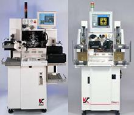
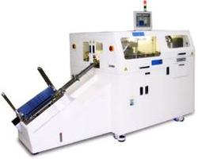
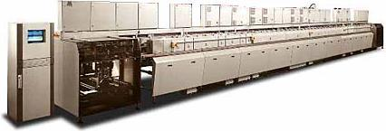

|
Semiconductor
Packaging / Assembly Equipment
Die
Attach Equipment
Die attach
machines
or
die bonders
(Fig. 1) are used to
mount or
attach the die to the die pad or die
cavity of the support structure of the package. A typical die attach machine consists of a system for
holding and
indexing the leadframes
or packages on which the dice will be mounted, a system for
dispensing
the
die attach
material
on the die pad or die cavity, and a pick and place system for
ejecting
a die from the wafer,
picking
it, and
positioning
it on the dispensed die attach material. Alphasem,
ESEC, and K&S are examples of manufacturers of die bonders. See also
Die Attach process.

Figure 1.
Examples of Die Bonders
Wirebonders
Wirebond
machines or
wirebonders
are used to
connect
electrically
the die of the device to the
leads of the package using
very fine wires. A typical wirebonder consists of a system for
holding and indexing the leadframes or packages for wirebonding, a system for
ensuring that the units are at the
right temperature
during wirebonding, and
a system for
connecting the wires from the die to the bonding fingers of
the leadframe or bonding posts of the package. ESEC,
ASM, Kaijo, and K&S are examples of manufacturers of wirebonders. See also
Wirebond process.

Figure 2.
Examples of Wirebonders
Molding
Equipment
A typical
molding
equipment
for encapsulating integrated circuits consists of a preheating chamber, a
plunger system, a melting pot, runners, and molding cavities.
The
preheating chamber
is where the molding compound is preheated prior to
being melted. The
plunger system forces the preheated molding
compound into the melting pot. The melting pot
is where the mold
compound reaches
melting temperature and becomes fluid. The plunger system also forces the fluid molding compound
from the melting pot into the runners. These
runners
serve
as canals where the fluid molding compound travels until it reaches the
cavities, which contain the leadframes for encapsulation. Sumitomo,
Lauffer, and Towa are examples of manufacturers of molding equipment.
See also
Molding process.
 |
|
Figure 3.
Example of an Automold system |
Deflash/Trim/Form/Singulation
(DTFS) Machines
The
Deflash (mechanical), Trim, Form, and Singulation of IC packages may be
achieved by employing one dedicated machine for each step, or by using one
equipment capable of doing all of these steps. Basically, DTFS
is a purely mechanical process, so a DTFS machine consists simply of an
automated
system of
punches,
blades,
strippers,
anvils,
etc. See also
DTFS process.

Figure 4.
Example of a Trim/Form/Singulation (TFS) Machine
Solder
Plating Machines
A
typical automated
solder plating machine used for applying lead finish on
semiconductor products has the following components:
a large non-corroding
frame
structure for housing the other parts of the equipment, a system or
belt
for
transporting
the IC's through the various steps of the lead finish process, a
channel
through which
the products pass while being processed,
storage tanks
for the chemicals used in the plating process,
pumps
for effecting the flow requirements of the fluid chemicals, an
extractor
system for extracting all the gases released from the various sections of
the equipment,
loading
and
unloading
systems, and an
elaborate
control system
that orchestrates the interaction and operation of these various
components.
The
lead finish process starts with the equipment's loading system, which
places the products on the belt. The belt then transports the units
through the channel of the machine, which consists of several sections.
It is in these sections that products are subjected to specific
electrochemical
treatments that
deposit the necessary metal layers on the
leads of the products.
Pumps
are used to bring the chemicals from the storage tanks to the channel
sections and to return the used chemicals to the storage tanks through
discharge pipes. Gases are continuously released during the plating
process, so an
extractor is used to continuously remove these
gases. After the products
have gone through the entire solder plating flow, the unloading system of
the equipment places the products back in their appropriate cassettes or
carriers. MECO
and Technic are examples of manufacturers of solder plating
equipment. See also
Lead Finish process.

Figure 5.
Example of an Electroplating Machine for Lead Finish
See Also:
Semiconductor
Eqpt;
Wafer Fab Equipment;
Test
Equipment;
Assembly
Accessories;
IC
Manufacturing
|
Books recommended for you: |
|
 |
 |
 |
 |
Home
Copyright
©
2001-2005
www.EESemi.com.
All Rights Reserved.
|